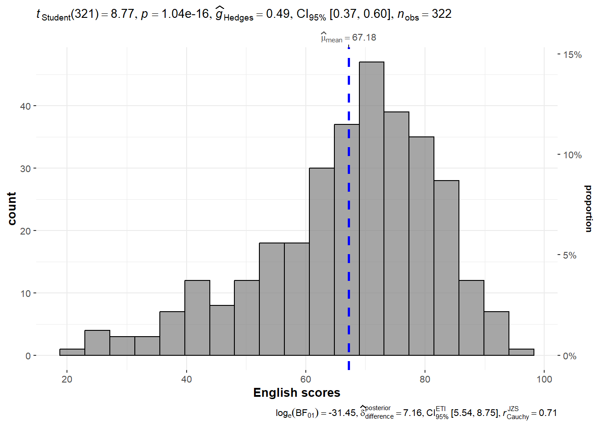
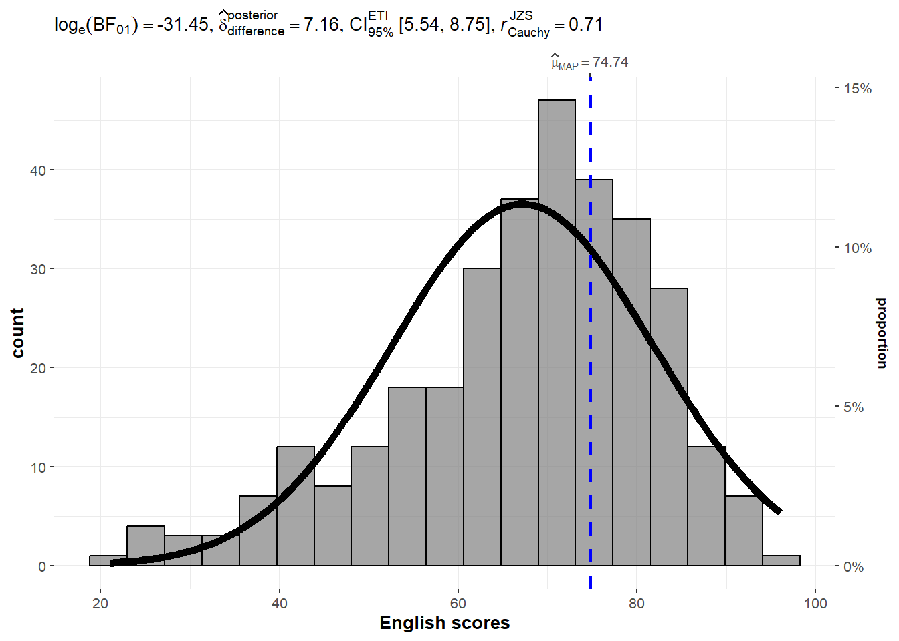
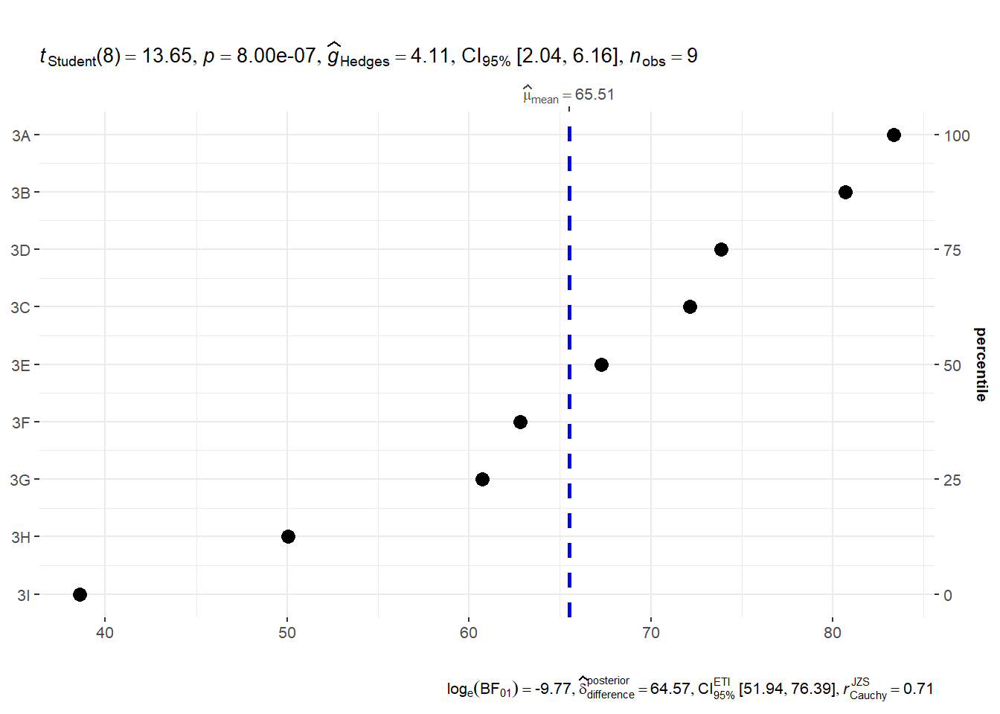
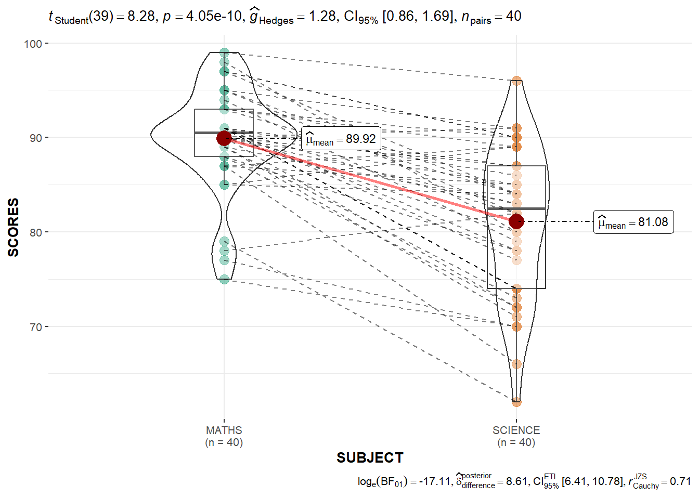

pacman::p_load(ggstatsplot, tidyverse)In-class Exercise 04
Getting Started
Installing and loading the required libraries
Data import
For the purpose of this exercise, Exam_data.csv will be used.
exam <- read_csv("data/Exam_data.csv")Parametric
set.seed(1234)
p <- gghistostats(
data = exam,
x = ENGLISH,
type = "parametric",
test.value = 60,
bin.args =list(color ="black",
fill = "grey50",
alpha = 0.7),
normal.curve = FALSE,
normal.curve.args = list(linewidth =2),
xlab = "English scores"
)
p
extract_stats(p)$subtitle_data
# A tibble: 1 × 15
mu statistic df.error p.value method alternative effectsize
<dbl> <dbl> <dbl> <dbl> <chr> <chr> <chr>
1 60 8.77 321 1.04e-16 One Sample t-test two.sided Hedges' g
estimate conf.level conf.low conf.high conf.method conf.distribution n.obs
<dbl> <dbl> <dbl> <dbl> <chr> <chr> <int>
1 0.488 0.95 0.372 0.603 ncp t 322
expression
<list>
1 <language>
$caption_data
# A tibble: 1 × 16
term effectsize estimate conf.level conf.low conf.high pd
<chr> <chr> <dbl> <dbl> <dbl> <dbl> <dbl>
1 Difference Bayesian t-test 7.16 0.95 5.54 8.75 1
prior.distribution prior.location prior.scale bf10 method
<chr> <dbl> <dbl> <dbl> <chr>
1 cauchy 0 0.707 4.54e13 Bayesian t-test
conf.method log_e_bf10 n.obs expression
<chr> <dbl> <int> <list>
1 ETI 31.4 322 <language>
$pairwise_comparisons_data
NULL
$descriptive_data
NULL
$one_sample_data
NULL
$tidy_data
NULL
$glance_data
NULLBayes
set.seed(1234)
gghistostats(
data = exam,
x = ENGLISH,
type = "bayes",
test.value = 60,
bin.args =list(color ="black",
fill = "grey50",
alpha = 0.7),
normal.curve = TRUE,
normal.curve.args = list(linewidth =2),
xlab = "English scores"
)
ggdotplotstats(
data = exam,
x= ENGLISH,
y= CLASS,
title = "",
xlab = ""
)
#### data preparation step for visualization using pivot_longer
exam_long <- exam %>%
pivot_longer(
cols = ENGLISH:SCIENCE,
names_to = "SUBJECT",
values_to = "SCORES") %>%
filter(CLASS == "3A")
#### visualization after pivoting
ggwithinstats(
data = filter(exam_long,
SUBJECT %in%
c("MATHS", "SCIENCE")),
x= SUBJECT,
y= SCORES,
type = "p"
)
ggscatterstats(
data = exam,
x = MATHS,
y = ENGLISH,
marginal = TRUE,
label.var = ID,
label.expression = ENGLISH > 90 & MATHS > 90
)
Funnel Plots
Next, we explore Funnel Plots